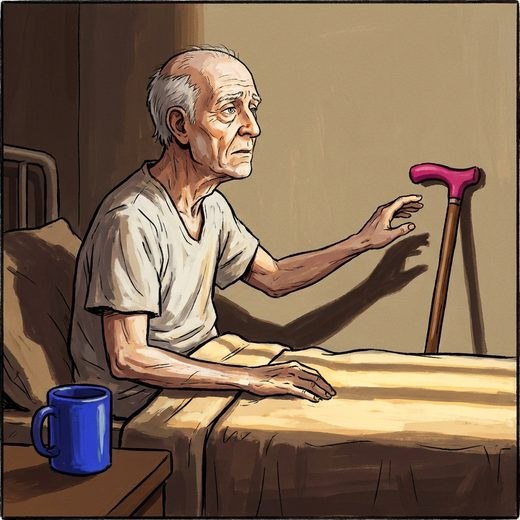

Consulta rápida à beira do leito
Condutas, doses e interações.
Referências da aula · 11
- Sánchez-Sánchez JL, Lu WH, Gallardo-Gómez D, et al. Association of intrinsic capacity with functional decline and mortality in older adults: a systematic review and meta-analysis of longitudinal studies. Lancet Healthy Longev. 2024;5(7):e480-e492. doi:10.1016/S2666-7568(24)00092-8.DOI
- Kortebein P, Ferrando A, Lombeida J, Wolfe R, Evans WJ. Effect of 10 days of bed rest on skeletal muscle in healthy older adults. JAMA. 2007;297(16):1772-4. PMID 17456818. doi:10.1001/jama.297.16.1772-b.PubMedDOI
- Covinsky KE, Pierluissi E, Johnston CB. Hospitalization-associated disability: “She was probably able to ambulate, but I'm not sure”. JAMA. 2011;306(16):1782-93. PMID 22028354. doi:10.1001/jama.2011.1556.PubMedDOI
- Krumholz HM. Post-hospital syndrome — an acquired, transient condition of generalized risk. N Engl J Med. 2013;368(2):100-2. PMID 23301730. doi:10.1056/NEJMp1212324.PubMedDOI
- Brown CJ, Redden DT, Flood KL, Allman RM. The underrecognized epidemic of low mobility during hospitalization of older adults. J Am Geriatr Soc. 2009;57(9):1660-5. PMID 19682121. doi:10.1111/j.1532-5415.2009.02393.x.PubMedDOI
- Convertino VA. Cardiovascular consequences of bed rest: effect on maximal oxygen uptake. Med Sci Sports Exerc. 1997;29(2):191-6. PMID 9044222. doi:10.1097/00005768-199702000-00005.PubMedDOI
- Mandell LA, Niederman MS. Aspiration pneumonia. N Engl J Med. 2019;380(7):651-63. PMID 30763196. doi:10.1056/NEJMra1714562.PubMedDOI
- Bharucha AE, Lacy BE. Mechanisms, evaluation, and management of chronic constipation. Gastroenterology. 2020;158(5):1232-49. PMID 31945360. doi:10.1053/j.gastro.2019.12.034.PubMedDOI
- Volkert D, Beck AM, Cederholm T, et al. ESPEN practical guideline: clinical nutrition and hydration in geriatrics. Clin Nutr. 2022;41(4):958-89. PMID 35306388. doi:10.1016/j.clnu.2022.01.024.PubMedDOI
- Cruz-Jentoft AJ, Bahat G, Bauer J, et al. Sarcopenia: revised European consensus on definition and diagnosis (EWGSOP2). Age Ageing. 2019;48(1):16-31. PMID 30312372. doi:10.1093/ageing/afy169.PubMedDOI
- Freitas EV, Py L, organizadores. Tratado de Geriatria e Gerontologia. 5ª ed. Rio de Janeiro: Guanabara Koogan; 2022.